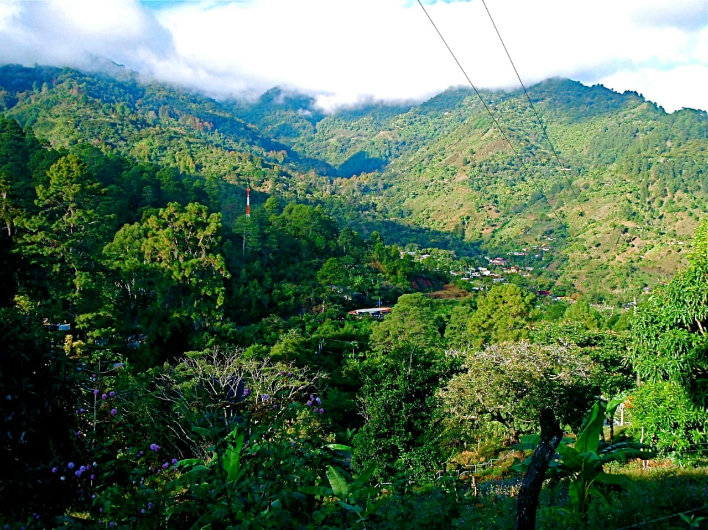

pagina principal
plantas en honduras
animales en honduras
biosfera del rio platano
parque nacional la tigra
el parque nacional la tigra fue el primer parque nacional en honduras . su principal objrtivo es la preservacion, conservacion ecologica y el mantenimiento del potencial hidrologico y territorial de esta reserva natural. el parque contiene gran divercidad de especies como: tucanes, tapires, pumas, monos y quetzal y ademas contiene una gran cantidad de insectos. los elechos son otra atraccion principal del parque que miden 20 metros de altura. es un bosque nublado con una superficie de 328 kilometros cuadrados. tiene una altitud de entre 1800 y 2185 metros. esta ubicado a 25 kilometros de tegucigalpa.
